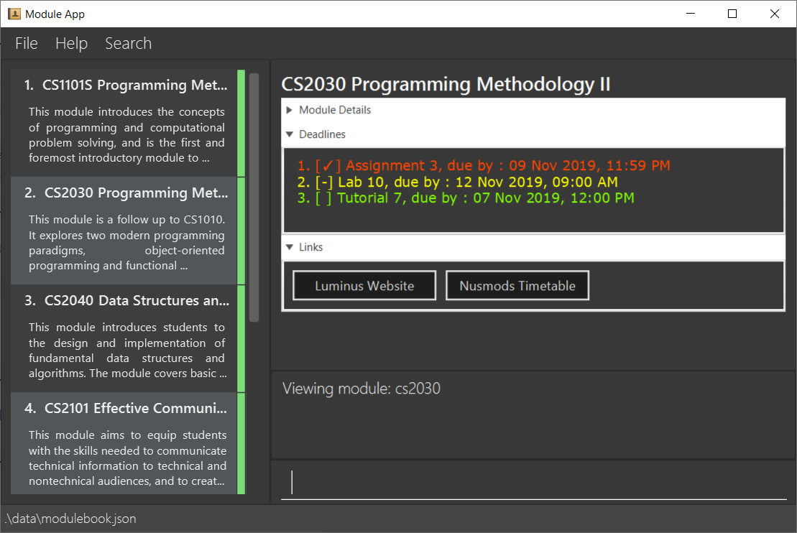

By: AY1920S1-Team W13-1 Since: Aug 2019 Licence: MIT
1. Introduction
ModuleBook is a standalone application that tracks and manages modules from National University of Singapore (NUS). The application contains many features useful for module management, such as deadline tracking, lesson scheduling and grade calculator.
ModuleBook is for NUS students who want a desktop app for managing modules. More importantly, ModuleBook is optimized for those who prefer to work with a Command Line Interface (CLI) while still having the benefits of a Graphical User Interface (GUI). If you can type fast, ModuleBook can manage your tasks more efficiently than traditional GUI apps. Jump to the Section 2, “Quick Start” to get started. Enjoy!
2. Quick Start
-
Ensure you have Java
11or above installed in your Computer. -
Copy the file to the folder you want to use as the home folder for your Address Book.
-
Double-click the file to start the app. The GUI should appear in a few seconds.
 -
Type the command in the command box and press Enter to execute it.
e.g. typinghelpand pressing Enter will open the help window. -
Some example commands you can try:
-
list: lists all modules -
addcs2103t: adds a module with module codecs2103tto be tracked by ModuleBook. -
deletecs2103t: deletes module with codecs2103t -
exit: exits the app
-
-
Refer to Section 3, “Features” for details of each command.
3. Features
Command Format
-
Words in
UPPER_CASEare the parameters to be supplied by the user e.g. inadd MODULE_CODE,MODULE_CODEis a parameter which can be used asadd CS1101S. -
Items in square brackets are optional e.g
MODULE_CODE [MODULE_TITLE]can be used asCS1231 discrete structures
3.1. Viewing help : help
Format: help
3.2. Adding a module: add
Adds a module to be tracked
Format: add MODULE_CODE
| Modules are imported from Nusmods database |
Examples:
-
add cs2103t -
add manual MODULE_CODE (not in database)
3.3. View the module: view
View a tracked module and enters module viewing mode. In module viewing, a different set of commands are available [see Section 4, “Module-View”].
Format: view MODULE_CODE
Example: view cs1231
3.4. Listing all modules : list
Shows a list of all current tracked modules.
Format: list
3.5. Locating a module: find
Displays all modules that match the given keywords.
Format: find KEYWORD [MORE_KEYWORDS]
Examples:
-
find computer
Returnscs2100andcs2105 -
find Betsy Tim John??
Returns any person having namesBetsy,Tim, orJohn
3.6. Deleting a module : delete
Untrack the specified module from ModuleBook.
Format: delete MODULE_CODE
Examples:
-
delete cs2100
Removes module CS2100 from tracked module list.
3.7. Exiting the program : exit
Exits the program.
Format: exit
3.8. Saving the data
ModuleBook data are saved in the hard disk automatically after any command that changes the data.
There is no need to save manually.
3.9. Multiple User Profiles [coming in v2.0]
Multiple users can use the same application on the same computer.
4. Module-View
Program enters module-view when view is called. In this mode, a different set of features are implemented.
4.1. Delete
Remove current viewed module. Returns to normal view.
4.2. Grade Manager
Tracks grades inputted by the user.
4.3. Deadline Manager
User can add and manage deadlines
4.4. File Manager [coming in v2.0]
Users can add files related to the module, and open them.
4.5. CAP Calculator
Calculates the cumulative GPA of all tracked modules. To be implemented
4.6. Back
Exits module-view and return to module list
5. FAQ
Q: How do I transfer my data to another Computer?
A: Install the app in the other computer and overwrite the empty data file it creates with the file that contains the data of your previous Address Book folder.
6. Command Summary
6.1. List View
-
Add
add MODULE_CODE
e.g.add cs2101 -
Delete :
delete MODULE_CODE
e.g.delete cs1231 -
Exit :
exit -
Find :
find KEYWORD [MORE_KEYWORDS]
e.g.find cs2101 -
Help :
help -
List :
list -
View
view MODULE_CODE
e.g.view cs2100
6.2. Module-View
-
Back
-
CAP Calculator
-
Deadline Manager
-
Delete
-
File Manager
-
Grade Manager